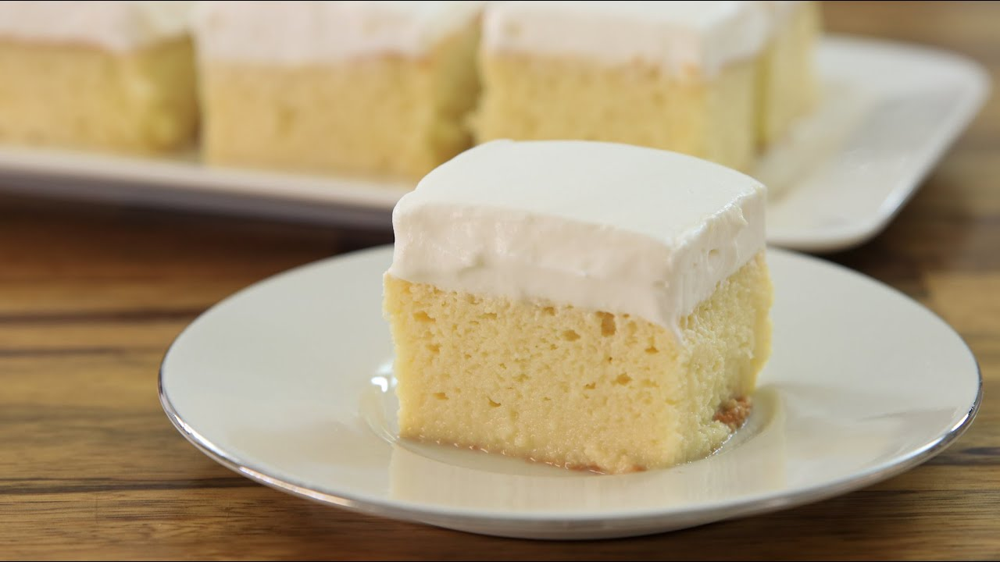

Tres Leches Cake
Ingredients
- 1 1/2 cups all-purpose flour
- 1 tsp baking powder
- 1/2 cup unsalted butter
- 1 cup white sugar
- 5 eggs
- 1/2 tsp vanilla extract
- 2 cups whole milk
- 1 (14 oz) can sweetened condensed milk
- 1 (12 fl oz) can evaporated milk
- 1 1/2 cups heavy whipping cream
- 1 cup white sugar
- 1 tsp vanilla extract
Directions
- Preheat oven to 350o.
- Sift flour and baking powder together; set aside.
- Beat sugar and butter together in a large bowl until light and fluffy. Add eggs and vanilla; beat well. Add flour mixture, about 1/2 cup at a time, mixing until well blended. Pour batter into the prepared pan.
- Bake until a toothpick inserted into the center comes out clean, about 30 minutes. Pierce cake all over with a fork; let cool to room temperature.
- Mix whole milk, condensed milk, and evaporated milk together in a bowl; pour over the top of the cooled cake and allow to soak in.
- Whip cream, remaining 1 cup of sugar, and 1 tsp vanilla in a chilled glass or metal bowl until thick. Spread over the top of the cake. Keep cake refrigerated until serving.